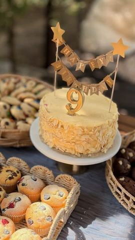

Lukina rodjendnska torta

Moja beleška
SačuvanoAko volite one prave domaće, kremaste torte koje svi pamte po ukusu, ovaj recept obavezno sačuvajte. 🤍 Luka je za rođendan poželeo tortu sa bananama, a mene je to odmah vratilo na recept koji je moja mama godinama pravila. Dodala sam samo malo jagoda i dobila tortu koja je nestala sa stola za jedno veče. 🍌🍓
Sastojci
Priprema
Vanil krem Rolat Šlag Voće (ili ukupno oko 500 g voća po želji) Dekoracija 1. Umutite jaja sa šećerom i vanilin šećerom, dodajte brašno i deo mleka. Ostatak mleka zagrejte, sjedinite sa pripremljenom smesom i kuvajte uz stalno mešanje dok se krem ne zgusne. Odmah prekrijte providnom folijom preko same površine i ostavite da se potpuno ohladi. 2. Za rolat umutite belanca u čvrst sneg, dodajte šećer, zatim jedno po jedno žumance, a na kraju lagano umešajte brašno špatulom. Smesu rasporedite u pleh obložen papirom za pečenje i pecite na 180°C oko 13 minuta, odnosno dok ne dobije lepu zlatnu boju. 3. Čim se ispeče, rolat odmah urolajte dok je još vruć. Kada se prohladi, odmotajte ga, odvojite od papira za pečenje, okrenite na drugu stranu, premažite tankim slojem džema od kajsija i ponovo urolajte. Ostavite nekoliko minuta da se stegne. 4. Umutite omekšali puter, pa ga kašiku po kašiku dodajte u potpuno ohlađen vanil krem uz neprekidno mućenje. Posebno umutite šlag sa kiselom vodom. 5. Rolat isecite na tanke šnite debljine oko 6 mm. 6. Kalup prečnika 20 cm obložite šnitama rolata, pa slažite redom: vanil krem, banane i jagode, tanak sloj šlaga. Ponovite postupak još dva puta. 7. Tortu završite vanil kremom i ostavite preko noći u frižideru. 8. Sutradan je premažite ostatkom vanil krema, ukrasite listićima badema i uživajte. Ako budete pravili ovu tortu, obavezno mi javite utiske. Mislim da će vam postati jedan od omiljenih dom
Originalni opis sa Instagrama
Lukina rodjendnska torta 🫶🏻 Ako volite one prave domaće, kremaste torte koje svi pamte po ukusu, ovaj recept obavezno sačuvajte. 🤍 Luka je za rođendan poželeo tortu sa bananama, a mene je to odmah vratilo na recept koji je moja mama godinama pravila. Dodala sam samo malo jagoda i dobila tortu koja je nestala sa stola za jedno veče. 🍌🍓 ✨ Kalup: 20 cm Vanil krem • 4 jaja • 200 g šećera • 1 vanilin šećer • 120 g brašna • 700 ml mleka • 250 g potpuno omekšalog putera Rolat • 6 jaja • 100 g šećera • 100 g brašna • džem od kajsija Šlag • 100 g šlaga u prahu • 125 ml kisele vode Voće • oko 300 g banana • oko 200 g jagoda (ili ukupno oko 500 g voća po želji) Dekoracija • 30–40 g listića badema Priprema 1. Umutite jaja sa šećerom i vanilin šećerom, dodajte brašno i deo mleka. Ostatak mleka zagrejte, sjedinite sa pripremljenom smesom i kuvajte uz stalno mešanje dok se krem ne zgusne. Odmah prekrijte providnom folijom preko same površine i ostavite da se potpuno ohladi. 2. Za rolat umutite belanca u čvrst sneg, dodajte šećer, zatim jedno po jedno žumance, a na kraju lagano umešajte brašno špatulom. Smesu rasporedite u pleh obložen papirom za pečenje i pecite na 180°C oko 13 minuta, odnosno dok ne dobije lepu zlatnu boju. 3. Čim se ispeče, rolat odmah urolajte dok je još vruć. Kada se prohladi, odmotajte ga, odvojite od papira za pečenje, okrenite na drugu stranu, premažite tankim slojem džema od kajsija i ponovo urolajte. Ostavite nekoliko minuta da se stegne. 4. Umutite omekšali puter, pa ga kašiku po kašiku dodajte u potpuno ohlađen vanil krem uz neprekidno mućenje. Posebno umutite šlag sa kiselom vodom. 5. Rolat isecite na tanke šnite debljine oko 6 mm. 6. Kalup prečnika 20 cm obložite šnitama rolata, pa slažite redom: vanil krem, banane i jagode, tanak sloj šlaga. Ponovite postupak još dva puta. 7. Tortu završite vanil kremom i ostavite preko noći u frižideru. 8. Sutradan je premažite ostatkom vanil krema, ukrasite listićima badema i uživajte. Ako budete pravili ovu tortu, obavezno mi javite utiske. Mislim da će vam postati jedan od omiljenih dom